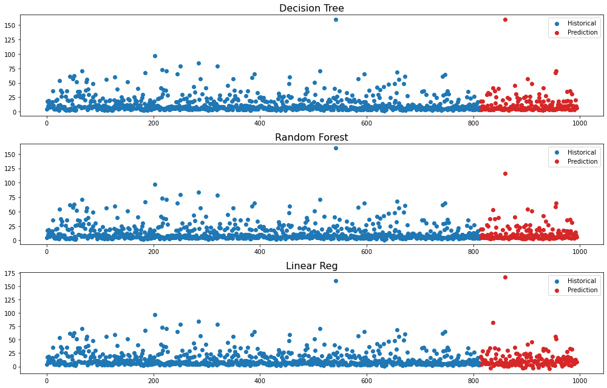

The goal of this project was practice a couple of common machine learning techniques. I test the linear regression, the decision tree, and the random forest estimators against a dataset of second hand cars. I use features such as "kilometers driven", "engine size", "number of seats", and "price of new model"to predict used car price. The dataset was prepared and shared by an user in Kaggle and it was almost ready for analysis (I did a couple of changes and some feature engineering). The random forest estimator created the best predictions, followed by the decision tree, and the linear regression.
Data Processing: The data downloaded from Kaggle was already in a decent shape. Main problems that had to be dealt with in this step of the analysis were unnecssary strings for numerical units (ex. "Lakhs", "Crores", "Kmpl") and encoding for categorical features (ex. Manual vs Automatic transmission).
Train the Model: I test a decision tree, a random forest, and a linear regression against the data. The dataset has 814 observations, so I choose leave-one-out cross validation to maximize sample size for training at the risk of taking longer runtimes. Random forest - which was the model that took the longest to finish - needed about 3 minutes to finish (My PC is fairly high spec). I calculate the average RMSE for each model and compare.
Results: the distribution of RMSEs for each model shows that the random forest model created less errors on average.
Predict New Prices: the package downloaded from Kaggle had a separate dataset with unknown used car prices that could be used for prediction. I run the same models against the new dataset and store all predictions in a dataframe. Plotting all three sets of predictios and with the known prices from the training dataset I get a visualization like this:

This was a very simple project to refresh and practice common machine learning models. It is usually expected that random forest performs better than decision tree and linear regression and indeed we confirmed that by testing those against the used car dataset.
I used the leave-one-out cross validation method. I could have used a gridsearchCV algorithm to perform cross validation and hyperparameter tuning to get less errors without overfitting.
In Part 2 of the Project Car, I will rerun a linear regression model for inference purposes. In other words, I will deep dive into the statistical logic of getting good model coefficients to understand and interpret how each feature is correlated with the target.